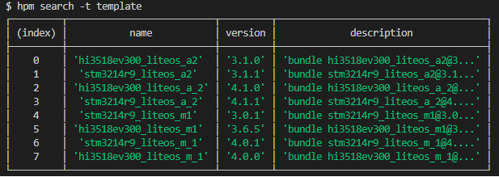
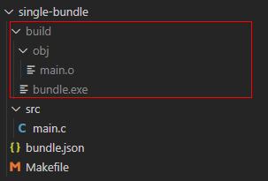

Bundle Development¶
Developing a OpenHarmony Bundle¶
You have an option to use any of the following methods to develop an OpenHarmony bundle:
Develop a brand new bundle from scratch.
Rewrite code of an existing non-bundle to develop a bundle.
Use HPM-provided bundle templates to quickly develop a bundle.
Creating a Bundle¶
Generally, you can find commonly used bundles on the HPM website. If they cannot meet your requirements, you can develop your own bundles.
You can publish bundles in the HPM repository if you like, so that your peers have an option to use them. Assume that you want to create a bundle named my-bundle in the D:/source directory:
Run the hpm init command to create the scaffold code for this bundle. For example, you can go to the D:/source directory and run the following command:
hpm init -t default -d demo my-bundle
The following files are generated in the source directory:
mybundle
├── bundle.json # Metadata description file of the bundle
├── example # Example of testing bundle functions
│ └── main.c
├── include # Internal header files of the bundle
│ └── mybundle.h
├── README.md # Brief description of the bundle
└── src # Source code of the bundle
└─ mybundle.c
Then, complete your coding based on service requirements. Finally, use git to commit your code (including the bundle.json file) to the code hosting repository, such as gitee.
Modifying a Bundle¶
If you have code unqualified for the OpenHarmony bundle structure, modify your code to match an HPM bundle. In the code directory (for example, mybundle2) storing your code, run the following command with the bundle name and version specified:
hpm init
Enter a bundle name (mybundle2 as an example) and press Enter.
Enter the bundle version (1.0.0 as an example) and press Enter. A bundle.json file is generated in the current bundle directory.
Add other descriptions in bundle.json, which is publishable.
$ hpm init Your bundle will be created in dirname E:\demo\mybundle2 ? bundle name mybundel2 ? version 1.0.0 Init finished!
Modify other information (such as the author, code repository, code directory, command script, and dependent bundles) in bundle.json.
{ "name": "mybundle2", "version": "1.0.0", "publishAs": "source", "dirs":{ ".":[ "README.md" ], "src":[ "test.c" ], "header":[ "header/test.h" ], "src/common":[ "src/common/foobar.txt" ] }, "scripts": { "build": "make -${args}" }, "dependencies": { "@ohos/cjson": "^1.0.0", "@ohos/": "^1.2.0" } }
Using HPM-provided Template to Create a Bundle¶
The HPM provides default and simple templates as well as other templates that are stored on the server.
You can run the hpm search -t template command to search for a template stored on the server.

Then, select your desired template based on the information below description, use the selected template to quickly create the bundle scaffold, and run the following command with the -t and -d parameters specified:
hpm init -t {templatename} -d dir name
{templatename} indicates the template name.
dir indicates the path for storing the bundle to be created.
name indicates the name of the bundle to be created.
Building a Bundle¶
After completing code development, you need to build the bundle. The HPM supports command integration so that you can select any build tool (such as make, gcc, and gn) suitable for your project. You only need to define the build command in the scripts in the bundle.json file of your project, and then you run the hpm command build to perform building.
Defining the Building Script¶
This section uses how to build an executable file helloworld in the app directory as an example.
app
├── BUILD.gn
├── include
│ └── helloworld.h
└── src
└── helloworld.c
Create a BUILD.gn file in the same directory as helloworld.c.
touch BUILD.gn
vim BUILD.gn
The following is an example of BUILD.gn for your reference:
executable("hello_world") {
sources = [
"src/helloworld.c"
]
include_dirs = [
"include"
]
}
NOTE: - executable is a built-in template of gn. You can run the gn help executable command to view how to use this template. - sources represents the source code path, and include_dirs represents the header file path.
Executing the Building Script¶
Run the following command:
hpm build
After all building operations are complete, the message “build succeed” is displayed. You need to check the building result.

Defining a Distribution¶
A distribution refers to an image file of an executable OpenHarmony solution composed of a group of bundles. It contains many dependent bundles and provides scripts to illustrate how to compile and link these bundles.
Defining Scripts¶
Define scripts in bundle.json as follows:
{
"name": "my_dist",
"version": "1.0.0",
"publishAs": "distribution",
"scripts": {
"dist": "make -${args}"
},
"base": {
"name": "dist-bundle",
"version": "1.0.0"
},
"envs": {
"args": "x86"
},
"dependencies": {
}
}
Distributing¶
Run the following command in the current distribution directory:
hpm dist
The hpm-cli tool automatically performs compiling and packing, and generates an image file of the dist script defined based on scripts. The following is an example:
out
|-xxdist.img
|-xx.file
Burning¶
The building result of the distribution can be burnt into devices, for example, by using the hiburn tool. You need to configure burning parameters in the bundle.json file of the distribution.
"scripts": {
"flash": "{$DEP_HIBURN}/hiburn"
},
You should set burning parameters by referring to the specific guide on the burning tool you use.
hpm run flash
Debugging¶
Start debugging after you have burnt the image file of the distribution into devices. The debugging process varies according to specific development boards and IDE debugging tools.